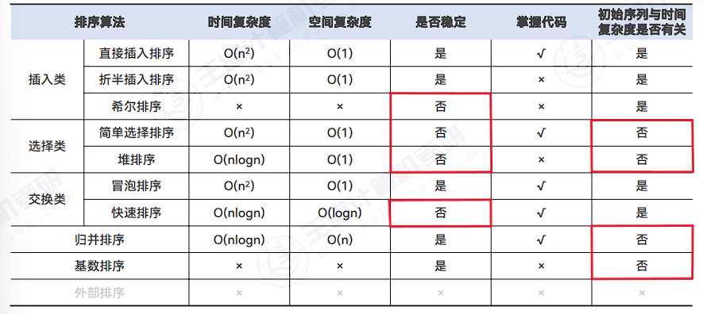

排序动画
排序的基本概念
排序，就是重新排列表中的元素，使表中的元素满足按关键字有序的过程。
排序的确切定义如下：
输入：个记录，对应的关键字为。
输出：输入序列的一个重排，使得（其中可以换成其他的比较大小的符号）。
算法的稳定性：若待排序表中有两个元素和，其对应的关键字相同即，且在排序前在的前面，若使用某一排序算法排序后，仍然在的前面，则称这个排序算法是稳定的，否则称排序算法是不稳定的。
Tip
算法的稳定性与算法优劣无关。稳定的排序算法不一定比不稳定的好，取决于实际需求。
根据数据元素是否完全在内存中，可将排序算法分为两类：
- 内部排序：在排序期间元素全部存放在内存中的排序；
- 外部排序：在排序期间元素无法全部同时存放在内存中，必须在排序的过程中根据要求不断地在内、外存之间移动的排序。
Tip
大多数的内部排序算法只适用于顺序存储的线性表。
插入排序
直接插入排序
空间复杂度：
平均时间复杂度：
直接插入排序算法是稳定的。
// 直接插入排序
void InsertSort(int A[], int n) {
for (int i = 1; i < n; i++) {
if (A[i] < A[i - 1]) {
int temp = A[i];
int j;
for (j = i - 1; j >= 0 && A[j] > temp; j--) {
A[j + 1] = A[j];
}
A[j + 1] = temp;
}
}
}// 直接插入排序（带哨兵）
void InsertSort(int A[], int n) {
for (int i = 2; i < n; i++) {
if (A[i] < A[i - 1]) {
A[0] = A[i];
int j;
for (j = i - 1; A[0] < A[j]; j--) {
A[j + 1] = A[j];
}
A[j + 1] = A[0];
}
}
}折半插入排序
先用折半查找找到插入的位置，再移动元素。
因为改进的只是比较的次数，而移动次数未发生变化，所以折半插入排序的时间复杂度仍为。
void InsertSort(int A[], int n) {
int low, high, mid;
for (int i = 2; i <= n; i++) {
A[0] = A[i];
low = 1;
high = i - 1;
while (low <= high) {
mid = (low + high) / 2;
if (A[mid] > A[0]) {
high = mid - 1;
} else {
low = mid + 1;
}
}
for (int j = i - 1; j >= high + 1; j--) {
A[j + 1] = A[j];
}
A[high + 1] = A[0];
}
}希尔排序
又称缩小增量排序
思想：先将待排序表分割成若干形如的“特殊” 子表，对各个子表分别进行直接插入排序，当整个表中的元素已呈“基本有序”时，再对全体记录进行一次直接插入排序。
- 空间复杂度：。
- 时间复杂度：和增量序列有关，无法用数学手段证明确切的时间复杂度，最坏时间复杂度，当 n 在某个范围内时，可达
希尔排序算法仅适用顺序表，不适用于链表。
void a(int A[], int n) {
int d, i, j;
// A[0]只是暂存单元，不是哨兵，当就<=0时，插入位置已到
for (d = n / 2; d >= 1; d = d / 2) {
for (i = d + 1; i < n; i++) {
// 需要将A[i]插入有序增量子表
if (A[i] < A[i - d]) {
// 暂存在A[0]
A[0] = A[i];
for (j = i - d; j > 0 && A[0] < A[j]; j -= d) {
A[j + d] = A[j];
}
A[j + d] = A[0]
}
}
}
}void ShellSort(int num[], int length) {
// 设置增量gap
for (int gap = length / 2; gap > 0; gap /= 2) {
// 根据增量划分子序列
for (int i = gap; i < length; i++) {
// 对子序列进行插入排序
int insertVal = num[i];
int insertIndex = i - gap;
while (insertIndex >= 0 && insertVal < num[insertIndex]) {
num[insertIndex + gap] = num[insertIndex];
insertIndex -= gap;
}
num[insertIndex + gap] = insertVal;
}
}
}
对有 n 个元素的顺序表采用直接插入排序算法进行排序，在最坏情况下所需的比较次数 是(D)；在最好情况下所需的比较次数是(A)。
A. n - 1 B. n + 1 C. n/2 D. n(n-1)/2
- 待排序表为反序时，直接插入排序需要进行 n(n-1)/2 次比较
- 待排序表为正序时，只需进行 n-1 次比较
对 5 个不同的数据元素进行直接插入排序，最多需要进行的比较次数是(B)。
A. 8 B. 10 C. 15 D. 25
直接插入排序在最坏的情况下要做 n(n-1)/2 次关键字的比较
在待排序的元素序列基本有序的前提下，效率最高的排序方法是(A)。
A. 直接插入排序 B. 简单选择排序 C. 快速排序 D. 归并排序
由于这里的序列基本有序，使用直接插入排序算法的时间复杂度接近，而使用其他算法 的时间复杂度均大于
数据序列｛ 8, 10 , 13 , 4 , 6 , 7 , 22 , 2 , 3 ｝只能是(C)两趟排序后的结果。
A. 简单选择排序 B. 起泡排序 C. 直接插入排序 D. 堆排序
冒泡排序和选择排序经过两趟排序后，应该有两个最大（或最小）元素放在其最终位置；插入排序经过两趟排序后，前 3 个元素应该是局部有序的。只有可能是插入排序。
Tip
在排序过程中，每趟都能确定一个元素在其最终位置的有冒泡排序、简单选择排序、堆排序、快速排序，其中前三者能形成全局有序的子序列，后者能确定枢轴元素的最终位置。
若数据元素序列｛ 11 , 12 , 13 , 7 , 8 , 9 , 23 , 4 , 5 ｝是采用下列排序方法之一得到的第二趟排序后的结果，则该排序算法只能是(B)。
A. 冒泡排序 B. 插入排序 C. 选择排序 D. 2 路归并排序
- 每趟冒泡和选择排序后，总会有一个元素被放置在最终位置上。显然，这里｛11 , 12｝和｛4 , 5｝所处的位置并不是最终位置，因此不可能是冒泡和选择排序。
- 2 路归并算法经过第二趟后应该是 每 4 个元素有序的，但｛11,12,13,7｝并非有序，因此也不可能是 2 路归并排序。
有些排序算法在每趟排序过程中，都会有一个元素被放置到其最终位置上，(A)算法不会出现此种情况。
A. 希尔排序 B. 堆排序 C. 冒泡排序 D. 快速排序
由于希尔排序是基于插入排序算法而提出的，它不一定在每趟排序过程后将某一元素放置到最终位置上。
在下列算法中，(C)算法可能出现下列情况：在最后一趟开始之前，所有元素都不在最终位置上。
A. 堆排序 B. 冒泡排序 C. 直接插入排序 D. 快速排序
在直接插入排序中，若待排序列中的最后一个元素应插入表中的第一个位置，则前面的有序子序列中的所有元素都不在最终位置上。
折半插入排序算法的时间复杂度为(C)。
A. B. C. D.
虽然折半插入排序是对直接插入排序的改进，但它改进的只是比较的次数，而移动次数未发生变化，时间复杂度仍为。
以下排序算法中， 稳定的是(C)。
A. 快速排序 B. 堆排序 C. 直接插入排序 D. 简单选择排序
基于插入、交换、选择的三类排序方法中，通常简单方法是稳定的(直接插入、折半插入、 冒泡)，但有一个例外就是简单选择，复杂方法都是不稳定的(希尔、快排、堆排)。
交换排序
交换：根据序列中两个元素关键字的比较结果来对换这两个记录在序列中的位置。
冒泡排序
空间复杂度：
最好时间复杂度：
最坏时间复杂度：
快速排序
在待排序表中任取一个元素 pivot 作为枢轴（或称基准，通常取首元素），通过一趟排序将待排序表划分为独立的两部分和，使得中的所有元素小于 pivot，中的所有元素大于或等于 pivot，则 pivot 放在了其最终位置，这个过程称为一次划分。然后分别递归地对两个子表重复上述过程，直至每部分内只有一个元素或空为止，即所有元素放在了其最终位置上。
int Partition(int A[], int low, int high) {
int pivot = A[low];// 第一个元素做为枢轴
while (low < high) {// 用low，high搜索枢轴的最终位置
while (low < high && A[high] >= pivot)high--;
A[low] = A[high];// 比枢轴小的元素移动到左端
while (low < high && A[low] <= pivot)low++;
A[high] = A[low];// 比枢轴大的元素移动到右端
}
A[low] = pivot;// 枢轴元素存放到最终位置
return low;// 返回存放枢轴的最终位置
}
void QuickSort(int A[], int low, int high) {
if (low < high) {// 递归跳出条件
int pivot = Partition(A, low, high);// 划分
QuickSort(A, low, pivot - 1);// 划分左子表
QuickSort(A, pivot + 1, high);// 划分右子表
}
}就平均性能而言，目前最好的内部排序方法是快速排序。
快速排序算法在要排序的数据已基本有序情况下最不利于发挥其长处。
- 当待排序数据为基本有序时，每次选取第 n 个元素为基准，会导致划分区间分配不均匀，不利于发挥快速排序算法的优势。
- 当待排序数据分布较为随机时，基准元素能将序列划分为两个长度大致相等的序列，这时才能发挥快速排序的优势。
性能分析：
-
递归层数
快速排序的时间空间效率都与递归层数有关。
-
时间
快速排序的运行时间与划分是否对称有关。
快速排序的最坏情况发生在两个区域分别包含个元素和 0 个元素时（例如第一次选取的枢轴是这个数组中的最大值或最小值），这种最大限度的不对称性若发生在每层递归上，即对应于初始排序表基本有序或基本逆序时，就得到最坏时间复杂度。
在最理想的状态下，即
Partition()可能做到最平衡的划分，得到的两个子问题的大小都 不可能大 n/2，可以得到最好时间复杂度。平均时间复杂度优化思路
尽量选取一个可以将数据中分的枢轴元素
- 选取头中尾三个位置的元素，取中间值作为枢轴元素；
- 随机选取一个元素做为枢轴元素
-
空间
由于快速排序是递归的，需要借助一个递归工作栈来保存每层递归调用的必要信息，其容量与递归调用的最大深度一致。
最好空间复杂度为；最坏情况下，因为要进行 n-1 次递归调用，所以栈的最坏空间复杂度为；平均情况下，栈的深度为。
递归次数与各元素的初始排列有关。若每次划分后分区比较平衡，则递归次数少；若分区不平衡，递归次数多。
递归次数与处理顺序没有关系==。
选择排序
选择排序：每一趟在待排序元素中选取关键字最小（最大）的元素加入有序子序列
简单选择排序
思想：假设排序表为，第趟排序即从中选择关键字最小的元素与交换，每一趟排序可以确定一个元素的最终位置，这样经过趟排序就可使得整个排序表有序。
void swap(int &a, int &b) {
int t = a;
a = b;
b = t;
}
void SelectSort(int A[], int n) {
for (int i = 0; i < n - 1; i++) {
int min = i;
for (int j = i + 1; j < n; j++) {
if (A[j] < A[min]) {
min = j;
}
}
if (min != i) {
swap(A[min], A[i]);
}
}
}-
空间复杂度：：仅使用常数个辅助单元，故空间效率为。
-
时间复杂度：：无论有序、逆序、乱序，都需要 n-1 趟处理。
-
稳定性：不稳定。
适用于顺序表和链表。
Note
简单选择排序算法的比较次数和移动次数分别为 ，。
堆排序
堆
n 个关键字序列满足下面某一条性质，称为堆（Heap）。
- 大根堆（大顶堆）： 且
- 小根堆（小顶堆）： 且
可以将堆视为一棵完全二叉树。
基本操作
-
插入元素
进行插入操作时，先将新结点放在堆的末端，再对这个新结点向上执行调整操作。
插入一个新元素的时间复杂度为。因为在向有 n 个元素的堆中插入一个新元素时，需要调用一个向上调整的算法，比较次数最多等于树的高度减 1，由于树的高度为，所以堆的向上调整算法的比较次数最多等于。
例如将关键字 [6, 9, 1, 5, 8, 4, 7] 依次插入到初始为空的大根堆 H 中。
例如已知序列 [25, 13, 10, 12, 9] 是大根堆，在序列尾部插入新元素 18，将其再调整为大根堆，调整过程中元素之间进行的比较次数是多少。

-
删除元素
被删除元素用堆底元素替代，然后让该元素不断下坠，直到无法下坠为止。
-
建立堆
首先将存放在中的 n 个元素建成大根堆，从后往前把所有非终端结点都检查一遍，查看是否满足大根堆的要求，如果不满足，则将当前结点与更大的结点进行互换。小根堆同理。
例如有一组数据 [15, 9, 7, 8,20,-1,7, 4]，用堆排序的筛选方法建立的初始小根堆。
堆排序
堆排序思路：
-
调整为大根堆
-
输出堆顶元素：由于堆顶元素就是最大值，将堆顶元素加入有序子序列，通常是与待排序序列的最后一个元素交换。然后将待排序元素序列再次调整为大根堆。
在顺序存储的 n 个结点的完全二叉树中，非终端结点的编号是。
时间复杂度为。其中建立初始堆的时间复杂度为；排序的时间复杂度为
空间复杂度为
堆排序是不稳定的。
Tip
通常，取一大堆数据中的 n 个最大（最小）的元素时，都优先采用堆排序。
例如只想得到 1000 个元素组成的序列中第 10 个最小元素之前的部分排序的序列，用堆排序)方法最快。
归并排序
归并：将两个或两个以上的有序表合并成一个新的有序表。
// A[low...mid],A[mid...high]各自有序
void Merge(int A[], int low, int mid, int high) {
int i, j, k;
int B[low + high + 1];// 辅助数组
for (k = low; k <= high; k++) {
B[k] = A[k];// 将A中的元素复制到B中
}
for (i = low, j = mid + 1, k = i; i < mid && j <= high; k++) {
// 将较小值复制到A中
A[k] = B[i] <= B[j] ? B[i++] : B[j++];
}
while (i <= mid)A[k++] = B[i++];
while (j <= high)A[k++] = B[j++];
}
void MergeSort(int A[], int low, int high) {
if (low < high) {
int mid = (low + high) / 2;
MergeSort(A, low, mid);
MergeSort(A, mid + 1, high);
Merge(A, low, mid, high);
}
}// 归并排序
void Merge(int num[], int l, int mid, int r) {
// 储存排序结果的辅助数组（也可以不使用辅助数组，直接在原数组进行排序，但更麻烦）
int res[l + r + 1], resIndex = 0;
// 排序
int lIndex = l, rIndex = mid + 1;
while (lIndex <= mid && rIndex <= r) {
res[resIndex++] = num[lIndex] < num[rIndex] ? num[lIndex++] : num[rIndex++];
}
while (lIndex <= mid) {
res[resIndex++] = num[lIndex++];
}
while (rIndex <= r) {
res[resIndex++] = num[rIndex++];
}
// 修改原数组
for (int i = l, j = 0; i <= r && j < resIndex; i++, j++) {
num[i] = res[j];
}
}
void MergeSort(int num[], int l, int r) {
if (l >= r) {
return;
} else {
int mid = (l + r) / 2;
MergeSort(num, l, mid);
MergeSort(num, mid + 1, r);
Merge(num, l, mid, r);
}
}时间复杂度：
空间复杂度：
归并排序是稳定的。
基数排序
基数排序不基于比较和移动进行排序，而基于关键字各位的大小进行排序。
假设长度为的线性表中每个结点的关键字由元组（）组成。称为最高位关键字（最主位关键字）；称为最低位关键字（最次位关键字）；其中，，（），称为基数。
为实现多关键字排序，通常有两种方法：
- 最高位优先(MSD)法：按关键字位权重递减依次逐层划分成若干更小的子序列，最后将所有子序列依次连接成一个有序序列。
- 最低位优先(LSD)法：按关键字位权重递增依次进行排序，最后形成一个有序序列。
基数排序得到递减序列过程：
- 初始化，设置个空队列，
- 按照各个关键字位的权重的递增的次序（个、十、百…），对 d 个关键字分别进行“分配”和“收集”。
- 分配：顺序扫描各个元素，若当前出来的关键字位=x，则将元素插入队尾；
- 收集：把各个队列的结点依次出队
如果想要得到递增序列，只需在收集时按照的顺序进行出队即可。
-
空间复杂度
需要个辅助队列，所以空间复杂度为
-
时间复杂度
基数排序需要进行趟分配和收集，一趟分配需要，一趟收集需要，所以基数排序的时间复杂度为，它与序列的初始状态无关。
-
稳定性
基数排序是稳定的
基数排序擅长解决的问题：
- 数据元素的关键字元素可以方便的拆分为 d 组，且 d 较小；（反例：给 5 个人的身份证号排序）
- 每组关键字的取值范围不大，即 r 较小；（反例：给人名排序）
- 数据元素个数 n 较大；（擅长：给十亿人的身份证号排序）
应用示例
在下列排序算法中，平均情况下空间复杂度为的是(D)；最坏情况下空间复杂度为的是(C)。
I.希尔排序 II. 堆排序 III.冒泡排序 IV.归并排序 V. 快速排序 VI.基数排序
A. I、IV、VI B. II、V C. IV、V D. IV
归并排序算法在平均情况下和最坏情况下的空间复杂度都会达到，快速排序只在最坏情况下才会达到，平均情况下为。
2 路归并排序中，归并趟数的数量级是(B)。
A. B. C. D.
对于 N 个元素进行 k 路归并排序时，排序的趟数 m 满足，所以，本题中即为。
将两个各有 N 个元素的有序表合并成一个有序表，最少的比较次数是(A)，最多的比较次数是(B)。
A. N B. 2N-1 C. 2N D. N-1
注意到当一个表中的最小元素比另一个表中的最大元素还大时，比较的次数是最少的，仅比较 N 次；而当两个表中的元素依次间隔地比较时，即时，比较的次数是最多的，为 2N-1 次。
对给定的关键字序列 110, 119, 007, 911, 114, 120, 122 进行基数排序, 第 2 趟分配收集后得到的关键字序列是(C)。
A. 007, 110, 119, 114, 911, 120, 122
B. 007, 110, 119, 114, 911, 122, 120
C. 007, 110, 911, 114, 119, 120, 122
D. 110, 120, 911, 122, 114, 007, 119
基数排序的第 1 趟排序是按照个位数字的大小来进行的，第 2 趟排序是按照十位数字的大小来进行的。
内部排序算法的比较及应用
x 为没有或者不需要关心

外部排序
前面介绍过的排序方法都是在内存中进行的（称为内部排序）。
外部排序：将待排序的记录存储在外存上，排序时再把数据一部分一部分地调入内存进行排序，在排序过程中需要多次进行内存和外存之间的交换。
败者树
败者树是树形选择排序的一种变体，可视为一棵完全二叉树。k 个叶结点分别是当前参加比较的元素，非叶子结点用来记忆左右子树中的”失败者”，而让胜者往上继续进行比较，一直到根结点。